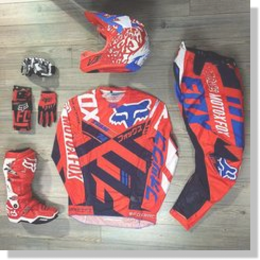

Para el motocross, el estilo es vistoso, llamativo y vibrante. Así como hay una inmensa variedad de jersey para todos los deportes, los jerseys de motocross y enduro son tan variados como el día es largo.
Para el motocross, el estilo es vistoso, llamativo y vibrante. Así como hay una inmensa variedad de jersey para todos los deportes, los jerseys de motocross y enduro son tan variados como el día es largo.
En el motocross, donde las caídas son comunes y los riesgos son altos, la indumentaria y el equipamiento deben proporcionar una protección integral. Estos elementos técnicos cumplen un papel fundamental en la seguridad de los pilotos: